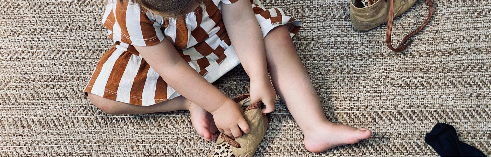

Hand aufs Herz: Du redest ständig davon, dass Kinder selbstständiger werden sollen. Aber mal ehrlich – wie oft nimmst du ihnen Dinge trotzdem aus der Hand, „weil es schneller geht"? Schuhe anziehen, Jacke zumachen, den Turm aufbauen, das Bild ausschneiden… Zack, machst du es eben selbst. Das hier ist ein ehrlicher Weckruf.
„Ich alleine!"
durch Selbstständigkeit
eigene Erfolgserlebnisse
Selbstständigkeit ist kein Luxus – sie ist ein Grundbedürfnis
Viele Erzieher*innen (und Eltern übrigens auch) behandeln Selbstständigkeit wie ein nettes Extra. „Wenn Zeit ist, darf das Kind mal selbst probieren."
Falsch. Kinder haben ein tiefes Bedürfnis danach, Dinge selbst zu tun. Es geht nicht ums Ergebnis, sondern um das Gefühl: „Ich kann etwas aus eigener Kraft schaffen."
Neurobiologisch ist das ein echtes Feuerwerk: Kinder verknüpfen Erfolgserlebnisse mit Motivation, ihr Gehirn baut stabile Netzwerke für Problemlösung und Durchhaltevermögen auf. Wenn du ihnen alles abnimmst, sendest du die Botschaft: „Du kannst das nicht. Lass das lieber."

Übernehmen vs. Begleiten: Der entscheidende Unterschied
In welchen Situationen helfst du wirklich – und wann nimmst du Kindern eigentlich die Chance zu lernen? Diese Tabelle zeigt den Unterschied ehrlich auf:
| Situation | ❌ Du übernimmst | ✅ Du begleitest |
|---|---|---|
| Schuhe anziehen | Du ziehst an (30 Sek.) – Kind wartet passiv | Kind zieht selbst an (5–10 Min.) – du bist daneben |
| Turm fällt um | Du baust sofort nach – Kind wird getröstet | Du wartest – Kind entscheidet, ob es weitermacht |
| Becher fällt um | Du wischst sofort auf | Kind wischt mit dir zusammen – lernt Verantwortung |
| Jacke falschrum | Du korrigierst sofort | Kind merkt es draußen selbst – echter Lernmoment |
| Bild ausschneiden | Du schneidest „hübscher" aus | Kind schneidet schief – und ist stolz auf sein Werk |
Die Botschaft, die du mit jedem Eingreifen sendest, entscheidet über das Selbstbild des Kindes: „Du schaffst das nicht" oder „Ich glaube an dich."
Dein Stress ist nicht ihr Problem
Klar, der Kita-Alltag ist voll. Du jonglierst zwischen Elterngesprächen, Eingewöhnungen, Projekten, Geburtstagsrunden und Personalmangel. Da bleibt wenig Nerv, fünf Minuten auf ein Kind zu warten, das mühsam die Socke über die Ferse zerrt.
Aber: Dein Stress darf nicht ihr Maßstab sein.
Kinder lernen nicht in dem Tempo, das dir gerade passt. Sie lernen in ihrem eigenen Rhythmus. Und genau dieser Prozess – das langsame, manchmal nervige Probieren – ist Lernen. Wenn du abkürzt, schneidest du ihnen den wichtigsten Teil ab.
Loslassen tut weh – aber es ist deine Aufgabe
Die Wahrheit ist unbequem: Kinder brauchen dich nicht, um perfekt angezogene Jacken oder saubere Bastelergebnisse vorzeigen zu können. Sie brauchen dich, um Fehler machen zu dürfen, ohne dass jemand genervt seufzt.
Loslassen bedeutet, die Kontrolle abzugeben. Und das ist schwer. Es kratzt an deinem Selbstbild als „gute Erzieherin". Aber genau darin liegt deine Professionalität: Nicht das perfekte Ergebnis zählt, sondern der Weg dorthin.
Kleine Schritte, große Wirkung
Selbstständigkeit entsteht nicht in Projekttagen, sondern im Alltag. Hier ein paar konkrete Situationen – und was du stattdessen tun kannst:
Schuhe anziehen dauert zehn Minuten? Dann plane zehn Minuten ein. Punkt.
Jacke falschrum? Lass das Kind selbst draufkommen – es wird den Fehler irgendwann merken.
Becher fällt um? Kein Drama. Zusammen aufwischen ist wichtiger, als es zu verhindern.
Aufräumen nervt? Genau hier lernen Kinder Verantwortung. Nicht du bist die Putzkraft – sie sind Teil der Gemeinschaft.
Diese kleinen Situationen sind Lernmomente. Wenn du sie wegnimmst, verlierst du den Kern.
Dein Ego ist der größte Feind der Selbstständigkeit
Das tut weh, aber lies weiter: Viele pädagogische Fachkräfte sabotieren Selbstständigkeit – nicht, weil sie es böse meinen, sondern weil ihr eigenes Ego im Weg steht.
Du willst zeigen, dass deine Gruppe „funktioniert"
Du hast Angst, dass Eltern dich bewerten, wenn die Kinder „zu langsam" sind
Du willst Kontrolle behalten, weil Chaos dich nervös macht
Aber mal ehrlich: Geht's hier um dich – oder um die Kinder?
Selbstständigkeit fördern bedeutet, dein Ego zurückzustellen. Es bedeutet, Chaos zuzulassen. Es bedeutet, Fehler nicht zu vermeiden, sondern zu feiern.
Geduld ist kein netter Bonus – sie ist deine wichtigste Ressource
Du denkst vielleicht: „Ich hab keine Geduld mehr." Dann sage ich dir: Du hast den falschen Job.
Kinder entwickeln Selbstständigkeit nur durch Wiederholung, Frustration und Ausdauer. Das auszuhalten ist kein „Extra", sondern Kern deiner Arbeit. Jedes Mal, wenn du ungeduldig wirst, erinnere dich: Es geht nicht um dich. Es geht um Kinder, die gerade lernen, ihre Welt zu begreifen.
Praxis-Tipps, die wirklich funktionieren
Damit du nicht nur genervt den Kopf schüttelst, sondern auch ins Handeln kommst:
Rituale schaffenBaue feste Zeitfenster ein, in denen Kinder Dinge selbst probieren dürfen – ohne Druck.
Material anpassenStelle kindgerechtes Werkzeug bereit: ergonomische Scheren, stabile Becher, niedrige Hocker.
Sprache bewusst nutzenStatt „Lass, ich mach das" → „Probier mal, ich bin hier, falls du Hilfe brauchst."
Fehler feiernLache gemeinsam über schiefe Türme oder verpatzte Kunstwerke.
Eltern ins Boot holenErkläre, warum du Dinge länger dauern lässt – damit sie nicht denken, du wärst faul.
Bewusst entscheidenFrag dich vor jedem Eingreifen: „Wessen Bedürfnis bediene ich hier gerade?"
Die Zukunft dankt dir
Frag dich: Welche Kinder willst du in die Welt entlassen?
Kinder, die gelernt haben, dass Erwachsene alles regeln – oder Kinder, die wissen: „Ich kann Probleme selbst lösen"?
Selbstständigkeit ist kein Kita-Extra. Sie ist die Basis für Resilienz, Motivation und Selbstbewusstsein. Und sie beginnt heute. Mit dir.
Ein persönliches Wort von uns
Wir, Janine und Hannah und unser Team von der EDULEO Akademie, wissen genau, wie schwer dieser Spagat im Alltag ist. Hannah hat selbst in Kitas gearbeitet und erlebt, wie viel Geduld und Nerven es kostet, Kindern Dinge zutrauen zu müssen, obwohl der Zeitdruck schreit: „Mach's doch eben selbst!" Und Janine kennt die andere Seite: das schlechte Gewissen, wenn man wieder mal „abgekürzt" hat – weil es einfach schneller ging.
Wir wissen, dass es Mut braucht, alte Muster loszulassen. Aber wir wissen auch: Genau da liegt deine größte Stärke als pädagogische Fachkraft.
Wenn du ehrlich bist, weißt du genau, wann du wieder „abkürzt". Das ist menschlich. Aber ab jetzt: Mach es bewusst. Entscheide dich für Selbstständigkeit, auch wenn's länger dauert.